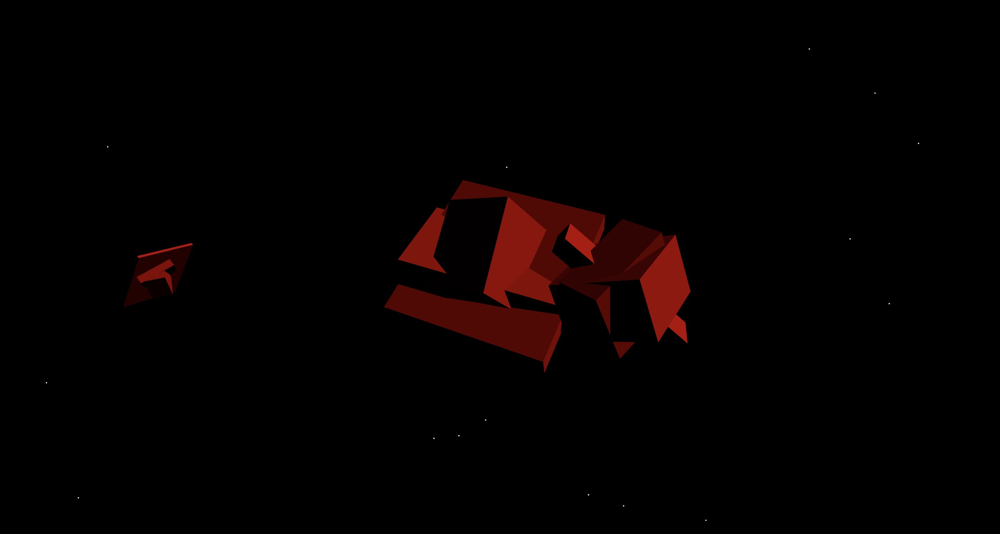
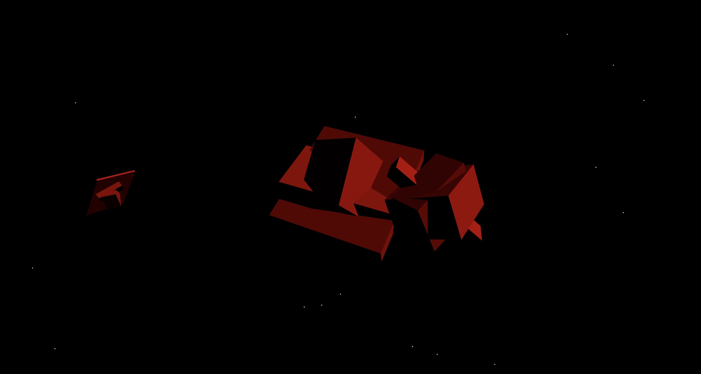

Computational Thinking
Let’s go back to Eno’s quote “that’s not what a computer would do” (Eno, 2006). I enjoy working with technology and computers, and it seems that the world and it’s many industries are relying progressively more on digital technologies as well. The importance of what Eno says here is that the computer’s role does not extend into the thinking process and development of your work – “computers are to Design as Microwaves are to cooking” (Glaser n.d.) as Milton Glaser said – they are a tool and as designers we should not let them be more than that, therefore our process of thinking should be spontaneous and personal, which is the intended purpose of Oblique Strategies. I try to keep these ideas present in my process.
Image: Screenshot of an abstract digital clock I created during Unit 2, where the the hours, minutes and seconds are represented by the size of the orbiting shapes.